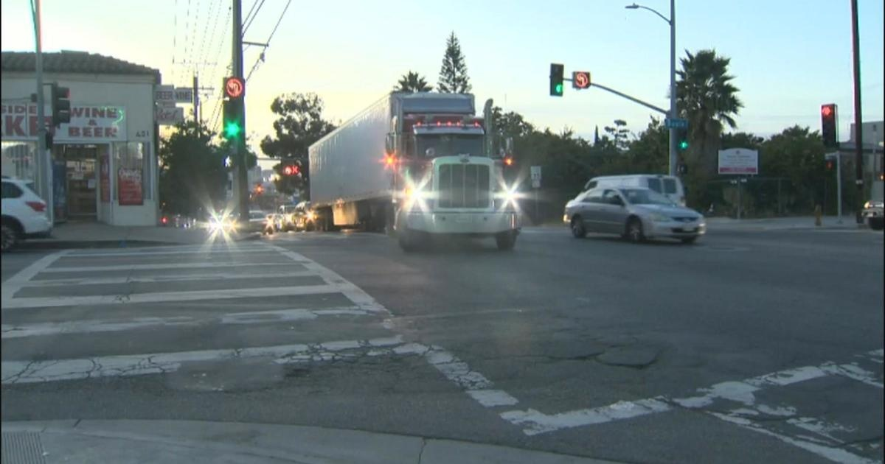

10 Freeway Closure: Big rigs cause backup on Boyle Heights streetsDespite Mayor Karen Bass making an impassioned plea to commuters on Tuesday, big rigs spilled onto Boyle Heights streets as truckers tried to find alternate routes around the "Angelenos, please stay on the freeway," Bass said after surveying the damaged thoroughfare from a helicopter. "It was very, very obvious that when people did not stay on the freeways and decided to get on the surface streets — the surface streets looked like an absolute parking lot." The influx of large trucks in the downtown Los Angeles-adjacent neighborhood is collateral damage from the unprecedented infrastructure disaster. It's also sparked additional infrastructure concerns as the weight of the tractor-trailers could cause damage to the roads. RELATED: "Five major freeways already surround Boyle Heights," said Councilmember Kevin de León, who represents the area. "Can you imagine all these semi-trucks and increase 10 fold, maybe even 100. That is more direct emissions people are breathing into their lungs." Resident May Alamari said she's already noticed a difference in pollution since the impromptu detours started. "It's smog. I have asthma. Some people have asthma. We can't breathe," said Alamari. The LA City Council approved a measure to intensely monitor air pollution, impacts on businesses and roads throughout Boyle Heights on Tuesday. for more features. |
 |